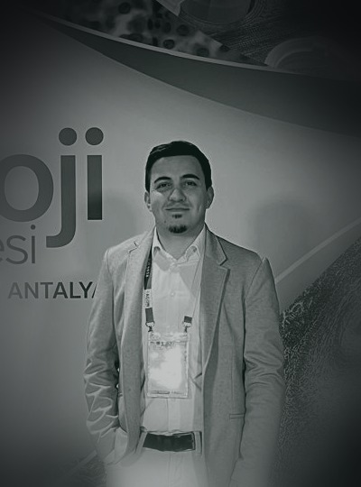

Yapay zeka, görüntü işleme, mobil ve interaktif web üzerine uçtan uca tasarlanan ve gerçek ortamda çalışan yazılım sistemleri kuruyoruz.
Projenizi konuşalım info@akaslai.comİş süreçlerinize entegre edilen AI asistanlar, chatbotlar ve otomasyon sistemleri. Tekrarlayan işleri otomatikleştirin.
Fotoğraf ve video üzerinden nesne tanıma, sınıflandırma ve tahminleme yapan bilgisayarlı görü sistemleri.
iOS ve Android için tek kod tabanından performanslı, kullanıcı odaklı uygulamalar geliştiriyoruz.
3D animasyonlar, scroll-driven anlatımlar, AR görselleştirme ve dikkat çeken tanıtım sayfaları.
Her hasta, o günkü durumu ve öncelik ile birlikte tek panelde.
Bu fikir nereden çıktı?

Murat Bahadır
AI Mühendisi · Kurucu
Simplex BT'de veri bilimci ve mühendis olarak, gerçek klinik ortamda çalışan görüntü işleme sistemleri geliştirdi. Laboratuvar değil, üretim.
Patoloji görüntülerinden kanser tespiti yapan bir modelle, bağımsız bir uluslararası jüri önünde finale kaldı.
Yapay zeka, mobil ve web tarafını aynı anda yürüten, fikirden çalışan sisteme kendisi taşıyan bir mühendislik yaklaşımı.